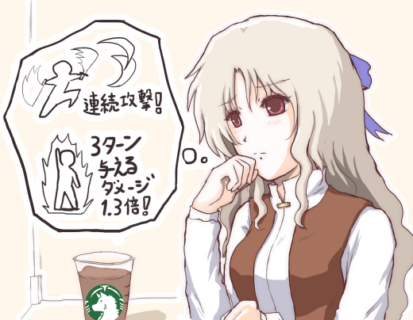
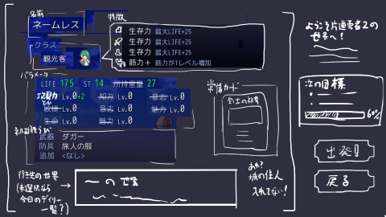

シルバーセカンド開発日誌
2017年09月
■
2017-09-30 (土) Kindleゲーム開発本 2▼【Kindleゲーム開発本の話】
今週は『片道勇者2』のゲーム終了画面処理を進めていましたが、
『片道勇者』のサポートやら何やらもあってあまりご報告できる内容がないので、
お絵かき1枚と「Kindleゲーム開発本」の話の復習でお茶にごしです！
「ゲームバランス編」の章イラスト

※開発日誌子ラッシー。元は2001年頃に描いた10月の記念イラストでした。
「ゲーム開発記事をまとめたKindle本出します！」の話ですが、大きく
「ゲームバランス編」と「メイキング編」に章を分けることにしました。
「ゲームバランス編」では、ゲームバランスや上達してもらうことへの意図、
個人的に好きな武装についてなどをまとめており、
「メイキング編」ではキャラ作りやタイトル作りや全体の作り方において
意図していることをまとめています。
これまでに開発日誌で書いた内容を振り分けた感じですね。
現在は、「Kindleゲーム開発本」に私のことを知らない人のための補助情報や、
時代が変わってもなるべく読みやすくなるよう、
いろいろと説明や文脈を追加しているところです。
私が作ったゲームの紹介なども巻頭に足しておく必要があるでしょう。
テキスト分量は『片道勇者開発記』が25.7万文字だったのに対し、
今回のKindle本はたぶん25万文字ちょっとくらいになりそうです。
つまり、文字数だけなら近い同じ量だと思います。
Kindle本は引き続き、ゲーム開発が進まなくなったときに編集を続けていきます。
追加のお絵かきも何枚か足す予定です。
【片道勇者開発記 ～四年の旅路～】
ちなみに、今回出す予定の本の前にも『片道勇者開発記』という本を出しています！
『片道勇者』開発をどう進めてきたのか、何に悩んだのか、どう意図したのか、
そしてコンシューマ展開の経緯やサイドストーリー小説など
いろいろと記されているので、
先に私の開発話に触れてみたいとお思いの方はぜひこちらもどうぞ！

『片道勇者開発記』公式ページ（ゲーム版）
※『片道勇者』と同じくウディタ製のゲーム版書籍です、BGMやエンドロールが付いてる豪華版です。
『片道勇者開発記』Amazonページ（Kindle版）
※こちらは普通にKindle本です。Kindleアプリを入れればWindowsでも
スマホでも読めますのでたまに読み直したい場合はこちらがオススメ？
以下は拍手コメントで複数いただいた内容です。コメントありがとうございます。
＞『片道勇者2』のアルファ版のテストに参加したいんですが
＞どういった形で行われますか？ .
まだ決めていないんですが、『片道勇者1』のアルファテストでは
おおみそかにレンタルチャット内でファイルを公開して
その場でリアルタイムに話をうかがっていました。
今回も似たような形で行うかもしれません。
（今はレンタルチャット解約状態なのでまた借りることになるでしょう）
ゲームファイル自体は一週間くらい開発日誌でも公開して、
毎週見に来てくださる方は触れられるようにするつもりです。
ただ、アルファはデータが各1～2個ずつしかないバージョンで、
可能性を測ったり基本システムや情報量をチェックすることが主目的なので、
ゲームとしては全然面白くないと思います、その点はご了承ください。
それでも、シルドラゼロのときみたいに「操作が直感的じゃなさすぎる」といった
方向性の再調整ができるので、アルファテストは大切だと考えています。
今のところ想像以上に必要な処理が多くて、
アルファテストまでたどりつくまでだいぶ遠そうです。
すでに基本システムのサイズが『片道勇者プラス』並みになっているので、
作業速度が特に遅いわけではないようなんですが、この調子だと
目標に向けて効率良くやっていかないと終わらなさそうです。 ■
2017-09-23 (土) 片道勇者2 【5】 キャラメイク▼【キャラメイク画面作成！】
ただいま『片道勇者2』のキャラメイク画面を作ってます！
なめらかに動く選択肢ウィンドウなどを作ってニヤニヤしているところです。

※画面は開発中のものです。
キャラメイク画面で入力できる内容は、
「名前」「クラス」「特徴」と、前作とほぼ同じとなっております。
（特徴のうち1つは、ストーリーやフラグなどに関わる特別枠にするかもしれません）
ただ前作ではキャラメイク後に選んでいた
「世界の選択」をどの段階に入れるかで迷っていて、
１．『片道勇者』同様にキャラメイク「後」に「世界」を選べるようにする。
２．キャラメイク「前」に「世界」を選べるようにする。
かで悩んでいました。
結局、今のところはリメイク作
「不思議のクロニクル 振リ返リマセン勝ツマデハ」にならって、
「キャラメイク画面で冒険先の世界も指定できる」ようにしてみました。
（画面の右下あたりにありますね）
すごいどうでもいいところかもしれませんが、選ぶ順番一つ取っても悩むんですよ！
普通は世界を選んでそれに適したチューンをして
出撃する方がやりやすい気がするんですが、
実際にそれをやってみると「キャラ状態も分からないのに選べないよ！」みたいに
感じてしまったので、どれを先に選んでもらえばいいのかを
設定するのは本当に悩みます。
結局、今回はマウス操作なので思いついた瞬間にポチッと選べてしまうため、
キャラメイク画面に世界選択も一緒に入れておくことにした次第です。
ちなみに『片道勇者2』は、今のところ
「フルマウス操作」を前提として作成しています。
余裕があったり、うまいインターフェースが思いついたら、
「キーボード」や「ゲームパッド用操作」も実装予定です。
ただキーボードもゲームパッドも、どちらにしても
マウスよりはちょっと操作が面倒臭くなりそうです。
ゲームパッドを入れるなら、アナログスティックも使用可能にしたほうよさそうなので、
『WOLF RPGエディター』の改造も必要でしょうね。
【能力値について】
キャラメイク画面を公開したので主人公の「能力値」についても一緒にご紹介！
まだ完全に固まっていないので今後変わる可能性がありますが、
今回の現状の能力値の種類としては「攻撃力」「理力」「クリティカル率」
「回避率」「知識判定」「カリスマ」「状態耐性」の7つがあります。
（最大HPなどはもうお分かりでしょうから今回はスルーです）
前回は能力を「筋力」「敏捷」などで表現していましたが、
今回はもっと直接的になります。
「何をどのくらい上げれば何ができるか分かりやすくしたい」というのが
前作の開発終了時の私の要望としてあったので、それを取り入れた形です。
各能力値の機能は以下の通りとなります。
【攻撃力】
文字通りダメージの源。ダメージ補正のない中量武器なら
「攻撃力」の50％～100％のダメージを与えられる、など、
物理ダメージはこの値に正比例する。
もしかしたら技を買うときにも消費するかもしれません。
【理力】
フォースの効果はこの数値に比例する。
剣士でもほんの少しくらいはある。
【クリティカル率】
攻撃がクリティカルする確率。
クリティカルすると装甲を引く前のダメージが2倍になる他、
100％超えした分はダメージ4倍のチャンスになります。
（たとえばクリティカル率110％なら確実に2倍、10％の確率で4倍）
【回避率】
敵の攻撃を回避できる確率。
ただこれを上げまくれるとバランス的に危ないことになりそうなので
限界値は低めになると思います。
回避率がなかったら、ピンチのときに「死ぬしかないじゃん……」ってなるので、
「もしかしたら避けるかも！」と思えるくらいには上げられるようにしたいですね。
フォースや火炎攻撃も、元の数値の半分くらいの確率で
避けられるようにするかもしれません。
【知識判定】
鑑定率やミミックの発見率などに影響する予定です。
今回は、付与があまり付いてないアイテムや平凡なアイテムほど、
鑑定成功率が上がり、そうでないのは鑑定が難しくなるようにする予定です。
イマイチなアイテムはすぐ分かるので投げるなり好きに使って、
そうでないレアっぽいのはドキドキしながら鑑定屋に見せてね！ という意図です。
【カリスマ】
前作の「魅力」と同じです。誰かにお願いをしたり、
仲間キャラを加入させたりするときに消費します。
「カリスマ」は完全に、消費すること前提のパラメータとなっています。
今回は、住人や仲間にも細かく「お願い」できるようにして、
「カリスマ」の使い所を用意したいなと考えています。
【状態耐性】
これは新しい要素です。状態異常にかかるまでのゲージが伸びます。
たとえば、「状態耐性」が6なら、毒効果2～5が付く「腐った肉」を1つ食べても平気、
といった感じになります。ただしこの場合でも、複数の「腐った肉」を一気に食べると
ゲージが6以上に溜まって「毒」になってしまいます。
ゲージ12になると毒Lv2になります。
逆に、一つ食べるごとに時間を空ければ、毒の効果を発揮させずに
「腐った肉」を全部食べることができます。
もちろん敵も同じ「状態耐性」ゲージを持っているので、
どんなボスでも一気に何回も状態異常の技をかければ状態異常にかかる予定です。
消費アイテムならほとんどの場合は一発で効くようにするでしょうけれど、
一気に2段階かかるか3段階かかるかの差が出るでしょう。
「混乱のアンプル」を投げたらボスには1段階分しかかからないけど、
ザコ敵なら一気に3段階目の混乱状態になったりする感じです。
「状態耐性」のパラメータを設けた理由ですが、
「プレイヤー側で狙って状態異常に耐えられるようにしたい」のと、
「強い状態異常効果だがかかりにくい『スキル』などを実装したい」
という欲求があったためです。
かかるのが「確率」でなく「溜まる」ようにすれば、受ける側として与える側としても
ある程度「狙う」ことができるようになるはずです。
実際に導入してみてややこしくなりすぎるようならボツにする予定ですが、
前述した「腐った肉」の例にもあるように、少なくとも耐える側としては
状態耐性ゲージがあるほうが考えどころができて楽しそうかなと考えています。
一方、与える側に立つと状態ゲージを溜めるのが面倒臭かったりするかもなので、
敵に使う場合は基本的に確実に一発で効いてもいいかもしれません。
（その場合、「ゲージが溜まりにくいが、
ゲージ一本分に達すれば相手のHPを1/2にする」
という強烈な状態異常はボツになります）
以上が、『片道勇者2』の現状の主人公の能力値です。
ここから増えたり減ったりするかもしれませんが、
ひとまずはこの範囲で作れるアイデアを色々投入してみて、
分かりやすさとの兼ね合いを考えながら調整していこうと考えています。 ■
2017-09-16 (土) ゲーム開発Kindle本出します！▼【ゲーム開発Kindle本、編集しています！】
ようやくメドが付いてきたのでお知らせします！
長い開発期間中の餓えを少しでも回避するための一環として、
ゲーム開発に関わる、この開発日誌の記事をまとめたKindle本の発売を決定しました！
「ゲームを完成させる作り方」のような、あの記事群ですね。
読もうと思えばこの開発日誌内で無料で読めるものですが、
まとめて読みたい人向けに少し再編して、記事への再考察（？）や
おまけコーナーを加筆したKindle版を空いた時間で作成しています。
※主に収録されるのは、このキャラ（ラッシー）のお絵かきが載ってる記事です。
記事がたくさん集まったらいつか一冊にしようと考えていましたが、
おまけ分を入れたら『片道勇者開発記』とすでに同じくらいの文字量に
なっていたので作成を決定しました。
2017年内には出したいと考えていますが、
開発に疲れたときしか触ってないので編集ペースがゆっくりなのと、
読みやすさを上げるために「寝かせては修正」をこれから何度か繰り返す予定なので、
完成は少し先になりそうです。
もし、手元に置いておいて、たまにまとめて読み直したいなーと
お思いになった方がいらっしゃいましたら、
よければあとしばらくお待ちいただけますと幸いです。
（※なんとTwitterですでに1人いらっしゃいました、ありがとうございます！）
私の開発日誌を知らない人と情報や考え方を共有するのにも使えるかもしれませんし、
何よりすでに無料公開されてる内容なので、売れなくて私がもだえることがあっても、
読者の方が読めなくて困るということはほとんどないと思います。
もちろん、発売後もここの記事は残しておきます。
あと「援助の窓口が欲しいんだけどないの！」と言ってくださる方もいらっしゃるので、
そういう方向けの窓口の一つになるといいかなという期待もあります。
なお、今回は『片道勇者開発記』と違ってゲーム版はありませんのでご容赦ください。
同じデジタル媒体がネット上で販売されてると
Kindleの印税が半分になってしまうためです。
2011年11月頃にゲーム開発のあれこれをまとめた本を出してみたいなと
開発日誌でほんの一言だけ言っていましたが、
『片道勇者開発記』がそれに半歩踏み込んだものだとすると、
本番は6年経ってようやく実現しそうです。
ということで、もし気になる方がいらっしゃいましたらお楽しみに！
遅くても年内には出せると思います。 ■
2017-09-09 (土) 片道勇者2 【4】 状況チェック！▼【片道勇者2 進んだ内容】
今週はみっちり『片道勇者2』の開発を進めました。
今回は、これまでの経過を復習してみようと思います。
【現在の目的は？】
ひとまず目指しているのは『片道勇者2』の「基本システムの完成」で、
そこまで終わったらアルファ版として、公開範囲はまだ決めていませんが
一定数の人にお試ししていただこうかなと考えています。
たぶん、各データ1～2個ずつのつまらない状態のゲームなので、
面白さを味わえる段階ではありません。
挙動のチェックや、今のうちに取り入れておいた方がいいフィードバックの獲得、
基礎難易度のチェック、通信機能の実験、初めての人がどんなプレイをするかの確認、
どこが説明不足かを把握する、などが主な目的になると思います。

※現在のゲーム画面、ほぼ以前公開した画面ラフに近い状態になってきました。
【ここ数ヶ月の実装内容】
ということで、5月20日頃にお知らせした進捗リストから現在までの実装内容をご紹介！
（無数にあった）あまりに細かい調整などは抜いてますが、
おおよそこのような感じになっています。
ウディコン含め脇の仕事が色々あったので、
それを抜くと実作業時間で2.7ヶ月分くらいでしょうか。
・主人公用のHP・ST・行動力ゲージ表示処理、
カードを選ぶと減りが分かったりするように。
・主人公の基本情報枠の実装
（左下の装備やら覚醒回数やら名前が載ってる場所、画像は仮）。
・スキルカードを色々作成。効果を実現するためのコマンド処理も色々追加。
→ ちょっと強い攻撃や補助スキルや簡単なパッシブスキルなど。
・戦闘周りの基本処理を実装。ここは長かった！ RPGの戦闘は、
最もデータベース処理が集中する場所ですからね。
・アイテムをいくつか作成、効果を実現するためのコマンド処理も色々追加
・マップ自動生成処理の初期版作成、今のところは幅が変わる
緑一面の世界が一定距離分作られるだけ。
・マウスカーソル処理。今回は映像だけからでも押したのが分かるように。
・カード使用処理、装備は投げるか装備するかの分岐も。
・装備変更処理、装備消耗処理。地味に複雑で管理が大変なところです。
付与システムはまだ実装していません。
・レベルアップ画面の処理。今回のレベルアップ処理は前回とだいぶ違います。
・ショップの取引画面の処理、地味に面倒臭いところ！
・NPCと会話できる機能の実装。
・各種システムメッセージ表示処理の実装。
・「闇」もとい強制スクロール処理を実装。前回はただ画面外に出たらアウトなので
楽だったんですが、今回は画面内に映ってるので意外と手間がかかりました。
・地帯の基本設定処理。「地帯別のランダムテーブルの生成」が主ですが、
データベースだけで処理しようとするとこれまた手間がかかる！
しかし、おかげで今回は新たな地形を増やしやすいはずです。
（※前回はコモンイベント内で手打ちでランダムテーブルを作ってた）
・「自動攻撃処理」を実装、敵をクリックしただけで攻撃に使えるカードを
使えるだけ自動選択してくれて、もう一回敵をクリックすると攻撃できます。
→ ほどほどに賢くするのに苦労しましたが、今のところそれなりに使えます。
・想定ダメージ表示処理を実装。カードを選んで敵にカーソルを合わせると、
与えられる想定ダメージが出てきます。
・財布に入る分からお金があふれると、お金がアイテムに変わる処理を実装。
→ またいずれ詳細をお話ししますが、今回は財布に限度があります。
・ここまでで出た膨大なバグをいったん修正。
・敵のHPゲージが見える処理を実装。今作ではHPが分かる「狩人」以外でも、
敵に一度ダメージを与えると、残りHPの具体的な値が分かります。
・マップ処理に致命的な問題があることが発覚したので対処。
ここまで来てチップサイズの変更が求められるという地獄！
調整だけで無駄に一週間くらいかかりました。
・「壁」を実装！ 壁は『片道勇者1』の1マス占有のものと違って
「ヘクスの間に立っている」んですが、内部処理が複雑で地獄を見ました。
→ 壁をすり抜けたり、壊したはずの壁にダメージが入り続けたり、
攻撃判定の射程が正しくふさがれなかったり、敵だけこっちを殴れるのに
こっちが壁向こうの敵を殴れなかったりして「アアー！」ってなっていました。
・「マップの拡大縮小表示」機能を実装
→ 以前共同開発した人に少し触ってもらったら
「ホイール回しても何もないんですね……拡大縮小とかしないんです？」
という要望が出てしまったので血の汗を流しながら拡大縮小を搭載したところ、
縮小表示すると非常にプレイアビリティが上がってしまったので
やはり視界が広いのは正義だと思いました（※上の画面の状態から縮小できます）。
・この辺で第9回ウディコンに半月～0.75ヶ月分くらいの労力を投入。
・敵が一定距離に入ったら「！」と表示して操作が一時停止する、
『片道勇者プラス』にもあった機能を実装！
これがないとやっぱり敵に突っ込みがちですし、
常に注意力コストを支払うことになるので遊ぶのも気疲れします。
・通常画面に細々としたサブ情報を表示する処理を追加。
→ 次のレベルアップ内容や次の目標や世界名や到達距離など。普通。
・『片道勇者1』のイーリスのガイド用メッセージで使われていた
ぼやーんとしたメッセージ表示処理を実装。
・ここまでの内容で、遊びやすさを増すために必要な
インターフェース的微調整とバグ取りをいろいろ行いました。
・画面端のキーヘルプ表示機能を実装。地味に大事。
・タイトル画面とワールド選択画面のボタン処理と汎用スクロール処理を実装。
次はキャラメイク画面！ デザインは昨日考えたところです。

※キャラメイク画面のデザインラフ、前作から一部切り貼り。
という感じです。まだまだやることが残っていますが、
マップ画面での最低要素は8割9割がた、実装し終わった段階です。
今回は後で直しやすいよう設計をしっかり作っているのに加え、
この段階で「前作にあったインターフェース的配慮」をすでに放り込み始めているため、
なかなか前と同じスピードというわけにはいかない感じです。
（2なのですから、1にあった親切設計くらいはきっと全部入ってて当然と思われるでしょう。
ただ『片道勇者プラス』のインターフェース調整だけでも
確か3～4ヶ月はかかりましたからね！）
2倍くらいで間に合うと思っていましたが、既知の細かい配慮を突っ込んでいると
かける時間が2倍でも前と同じところまで行けない！ なるべく急ぎます。
【何が残ってる？】
いま残っていると思われる「基本システム」に必要な内容は以下の通りです。
もちろん、思い出すごとにどんどん増えます！
・タイトル周りの処理の完成
・キャラメイク画面の実装
・ＴIPS（ローディング）画面の実装
・ゲーム終了時の評価画面 ＋ 各種解放処理
・次元倉庫の実装 → 今回どういう仕様にしましょうかね……。
・会話選択肢の実装
・仲間ＮＰＣとの会話機能（立ち絵が表示されたりするアレ）
今回は画面左に顔アイコンが出て、ときどきピコッとテーマが表示されたりしつつ、
いつでも話ができるようにしようかなと考えています。
・街やダンジョンの設置処理 ……と表には出ませんがマップエディタの作成。
『片道勇者1』でも施設パーツ作成用のマップエディタをゲーム内に作ってました、
これがないといろいろ作るのが大変です。
・マップ自動生成処理の完成
・装備の付与システムの実装
・NPCが1ヘクスに複数体まとまって登場する処理（内部処理がちょっと複雑そう）
・通信機能の実験
・クエスト進行のために必要なシステムを考える。
・他、忘れてるもの全部
というわけで、今後も地道に開発を進めていきます！
なお、ここまで作っている限りでは、かなりいけそうな雰囲気が出ているので、
「プロトタイプ」呼ばわりはそろそろ脱してもいいかもしれません。
主な仕組みは前作より圧倒的に楽しそうで、データが1～2個しかない状態でも
動かしてるだけで程々に面白い（※前作のアルファと比べて）という快挙なので、
あとは、最終的に面白く作れるかどうかは、
私のバランス感覚や発想力次第かなと見込んでいます。
バランスについてはこれまでほとんど意図を持てておらず、感覚で作ってきただけなので、
今回こそ「面白くするための仮説」を立てて攻める必要があるでしょう。
いろいろ思いついたら、また開発日誌にまとめてみたいと考えています。
以下は気になった拍手コメントへの返信です。いつも本当にありがとうございます！
＞デッキシステムで取捨選択迫るとなると、 武器の重量タイプとは
＞別に所持量にかかわる「重量」は廃止になるんでしょうかね？ .
＞無くすと性能の差別化の材料が減りそうですが。 .
重量システム周りは、実はまだしっかり考えてない部分だったりします。
「最大アイテム所持数」だけ設定して重量自体は全部「１」とするか、
あるいは前回同様に重量を差別化するか、デッキ限界までは無数に持てるのか、
その辺りはまだ決めかねているところです。
「基本はどのアイテムも所持枠1で済むが、重い装備はアイテム枠を2～3つ使う」
など、そういう方式でもいいかもしれません。
今回は、なるべく細かい計算をしなくて済むようにしたいなと考えています。
また、「所持重量」周りで「面白み」や「プレイの意図」を生むための
アイデアも考え中です。
ある程度制限をゆるくして重量があふれても平気なようにして、
所持枠に空きが多いほどボーナスが付く、所持枠をオーバーするとペナルティがかかる、
というシステムにしてもいいかな、などとも考え中です。
アイテムを持ちすぎている状態でも動ける方が面倒臭くなくていいでしょうし、
重量オーバーによる弱体化を承知で荷物をいっぱい抱えて
街まで向かうのはそれはそれでスリルがあって楽しそうです。
一方、「そもそも重量制限いるのか？」という方向性も、
しっかり悩んでみるべきだと思っています。色々考えていきます。 ■
2017-09-02 (土) 片道勇者2 【3】 コメント返信▼【片道勇者2記事へのコメント返信！】
今週はドタバタしていて開発が進められなかったので、
今週の開発日誌は『片道勇者2』の記事にいただいたコメント返信回です！

「片道勇者2 元気度と命中率」の記事へいただいたコメント
＞最大STの減少！ これはありそうでなかった（？）疲労の表現ですね。
さすがに頻度の高い強打が打てないなら回復時かとは思いますが（＾＾）。
最大値が減少する要因は時間（ターン）経過（や罠系）のみなのでしょうか？
たとえばスキルの使用など現在STが減る行為の蓄積も
最大値減少に影響したりするのでしょうか？
まだ仮段階ですが、「最大STが減少する要因」は今のところは
「攻撃したり、アイテムを使ったり、手札を引き直したりする」といった
「アクション」を複数回行うたびに「最大ST」が減少していく予定です。
あと、フォースや強力な技は、最大STをそのまま消費するものも出てくると思います。
「現在STが減る行為の蓄積」で最大STが減るというよりは、
単純に「アクション回数」で減少量が決まりそうです。
カードゲーム風という方式の都合上、うまい相乗効果を連続で出したりすることで
「少ないアクション数で高効率を出せるほうが偉い」、
というゲーム性の方がマッチしそうですから。
もしかしたら、長く移動するだけでもほんの少しずつ
最大ＳＴが減るようにするかもしれません。
この辺りは実験・調整をしてみた上で検討する予定ですが、
とにかく前作までのように、最大STを減らす主因は「移動」ではなくなり、
たぶん「アクション数」の方が重要になってくると思います。
つまり、激しい運動をしなければスタミナを長持ちさせることができます。
「片道勇者2 武器の重量ﾀｲﾌﾟ」の記事へいただいたコメント
＞おお、なんかかっちりしててボードゲームっぽい。
連続攻撃率の概念はなくなっちゃうんですかね。
はい、『片道勇者２』では「連続攻撃率」自体はなくなりますが、
ゲーム上の１ターン内の攻撃数は「手札の内訳」の変化で表現されます。
たとえばうまいこと手札に「攻撃」カードが3枚来て、
それらを全て出すための「行動力」が十分にあれば、1ターンに3回の攻撃が行えます！
その条件がそろうかどうかが、今作での「連続攻撃」率といってもいいと思います。
「片道勇者2 武器の重量ﾀｲﾌﾟ」の記事へいただいたコメント
＞やっぱり装備品は壊れるんですね・・・持ち運び限界と
未来の安全を天秤にかける日々がまた始まるのですね・・・
個人的には重量中かつ、槍のようなパッシブ範囲攻撃付が
好みでしょうか。安定と保険！
槍は『片道勇者』だと割とすぐ壊れる印象だったんですが、強いですよね。
前も話しましたが、今回の槍は１ヘクス内の前後衛貫通攻撃になりそうです。
「装備品が消耗していくシステム」については現在いろいろ検討中です。
消耗システムは「武具のやりくりに判断を求められる」ので好きな一方、
「取り返しが付かなくなるのが好かない！」と感じる人も
一定数いらっしゃる気がするので、
今回はその辺りのストレスを低減させるシステムもいくらか入れたいと考えています。
（『片道勇者プラス』にあった修理システムだけで十分だったという人も
一定数はいらっしゃるでしょうけれど！）
たとえば、現段階ではあくまで案ですが、
●武器耐久が0になっても装備できなくなるだけで残るようにする、
終了画面や巻物で修理可能（ただし、砕くと大きな経験値が手に入る）。
●スタート地点から鍛冶屋みたいな仲間を連れていけて、武器が壊れた瞬間に
コストを払って修理を頼める。一定時間後に修理完了。
●大きなコストがかかるが、次元倉庫内の指定の武器に
「壊れても失ってもゲーム終了後に耐久MAXで返って来る」
【祝福】的なものを付けることができる。愛用の武器をよりパーフェクトに！
のいずれかまたはこのうち複数のシステムを設けることで、
ある程度は財産喪失の可能性を減らしてのびのび遊べるようになるかな、
などと考え中です。
最終的には、実装コストや、かえってプレイの面倒くささが増さないか、
硬派プレイヤーさんの楽しみ方と両立できるか、
などの点も考慮して選ばれることになると思います。
ということを考えていくと、3つめの【祝福】機能はプレイ面では面倒臭くなく、
倉庫使用プレイ以外にも全く影響をおよぼさないのでかなり有りかもしれません。
財産蓄積型のプレイヤーさんも目標にできる要素ですしね。 2017年09月
Copyright © SmokingWOLF / Silver Second
 カテゴリ: 開発日誌
カテゴリ: 開発日誌 カテゴリ: 開発日誌
カテゴリ: 開発日誌